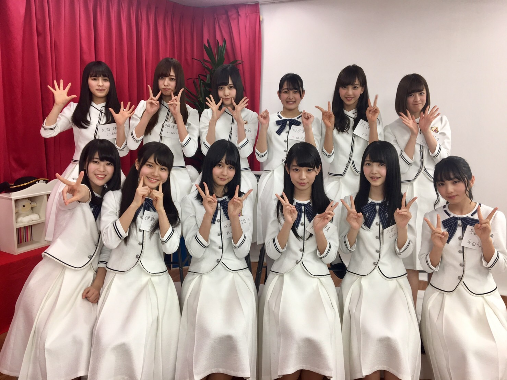
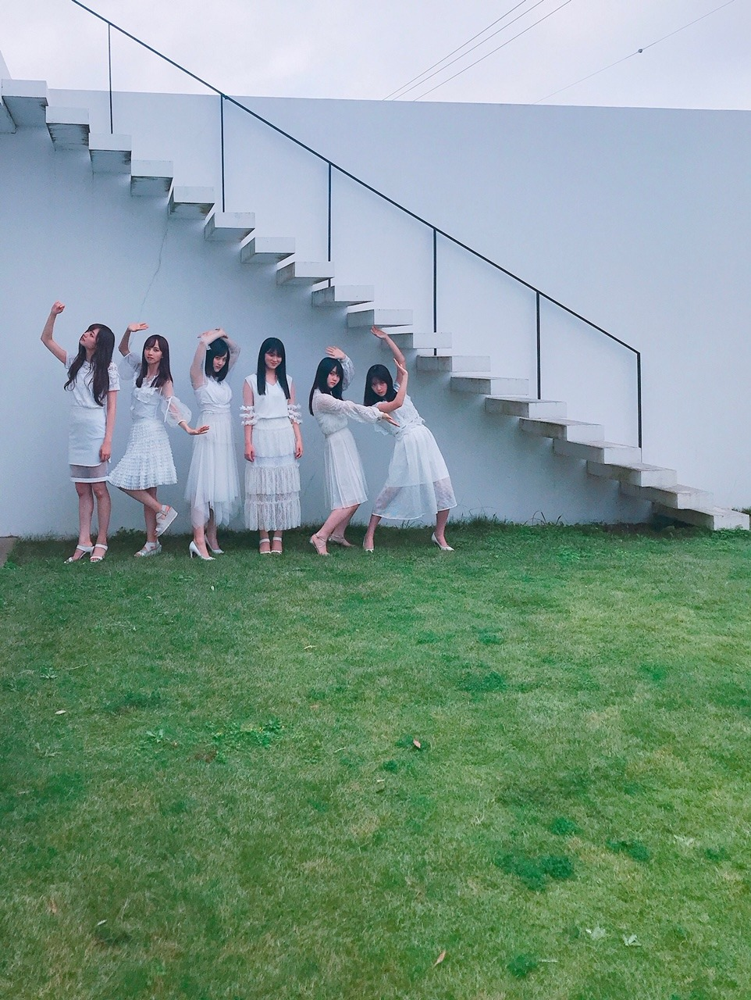
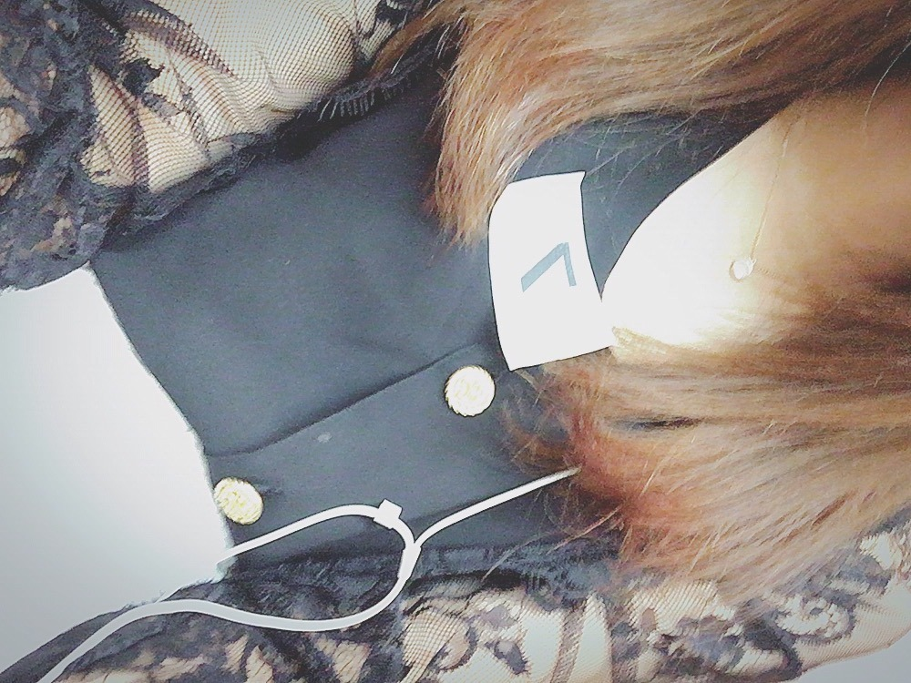
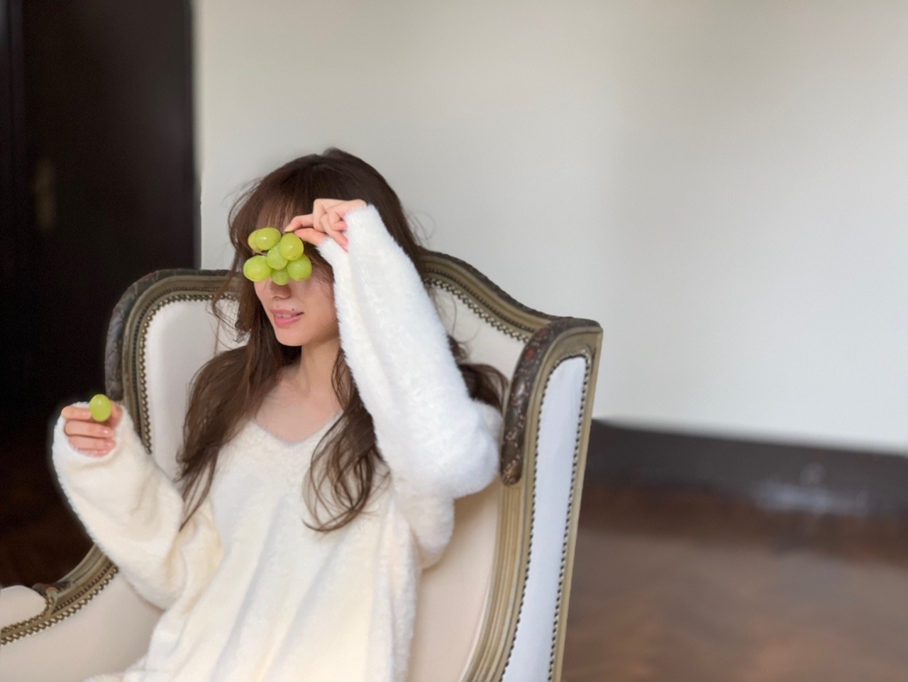

鮮明すぎる時間と曖昧な時間

４年が経ちました！
みんなそれぞれがそれぞれの方向を向き
だんだんと大人になり、考え方も変わり、
１２人でいる時の雰囲気も
どこか変わってきた気がします
でも、今でも全員が集まると、
みんなが無邪気でまだまだ子供のようで
笑顔で口を大きく開けて笑い合う姿は
同期にしか見せない姿であり顔。
そこがずっと変わらないみんなの好きなとこ☀︎
この笑顔守りたいー！！！って思います︎︎︎︎︎︎︎︎✌︎
個性たっぷりのみんな！
笑ってるみんな！
できることならずーっと眺めていたい！
４年かあ。
長かったのかな〜あっという間だったのかな〜
なにより１２人でここまでこれて 幸せです︎︎︎︎！

なぞの写真
この世界に飛び込んで
毎日夢中で生きていたら
気づけば4歳も歳をとっていました
１７歳の高校３年生だった私が
２１歳の大人になっていました
毎日に夢中すぎて
数字を見てやっと、月日の経過を実感します
初めの頃は時間など特に気にもしてなくて
歳を重ねることに喜びを感じていましたが
最近は歳を重ねることへの重みと
有限である時間の儚さに
どこか気持ちが追いつきません、、
なんだかずっと
こんな夢のような幸せな日々が続くんじゃないかと
どこかで思っていた自分がいましたが
この４年でたくさんの別れを知り
ここにいられるのは永遠ではないんだと、
そんな瞬間をたくさん目にしてきました。
今ここにいる誰しもが経験することであり
いつしかの未来の自分の姿。
何年、と、数字が増えていく度に
募る想いも思い出たちも
先を見据える気持ちも溢れてきますが
こういった節目に改めて
乃木坂46でいられる幸せを噛み締め、
大切に大切に思い出を振り返って
これからも前を向いて生きていきたいと思います☀︎

オーディション
乃木坂46として
５年目を迎えます！
いつも応援してくださるファンの皆様、
心から、本当にありがとうございます！
いつだって味方でいてくれました！
全てを受けいれ味方でいてくれました！
本当に、本当に感謝しています。
下向きになってしまう時はあっても
私は誰のために、なぜこう頑張れるのか
努力すること、笑顔でいること、
それを止めずに続けられる理由は
好きでいてくれる皆様への恩返しをしたいからです！
これからも、
よろしくお願いします。
たくさん笑顔を共有しましょう！
では

ますかっと
Original：https://www.nogizaka46.com/s/n46/diary/detail/57631?ima=4936&cd=MEMBER